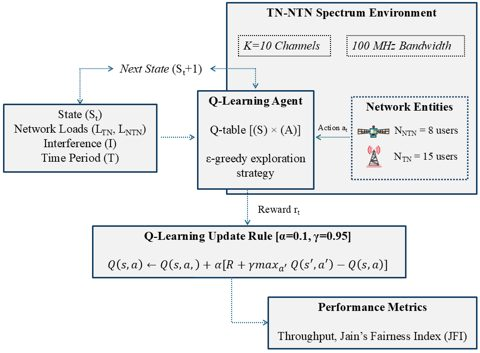
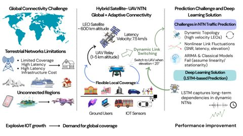

Self-Directed Spectrum Allocation Framework for Integrated TN-NTN 6G Networks
International Conference on Ubiquitous and Future Networks (ICUFN), 2026
Integrated Ph.D. Student, Computer Science and Engineering
Intelligent Networking Lab (INL), Chung-Ang University, Seoul
I work on AI for wireless networks, including AI-native radio access networks (AI-RAN), integrated terrestrial and non-terrestrial networks (TN-NTN), and LEO satellite systems, and on quantum machine learning (QML). I'm advised by Prof. Wooyeol Choi. Before Chung-Ang, I earned my B.Eng. in Computer Science and Technology from Nantong University, China, ranked 2nd of 32.

